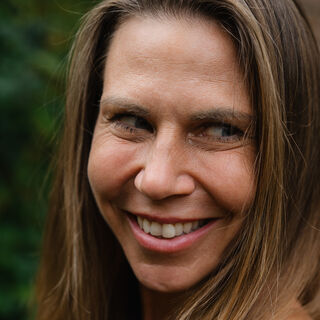

nádech
Kristýna Paulus
Jóga·Zdraví·Džjotiš
Jóga není (pouze) ásána
Lekce pro začátečníky, meditace, jóga nidra a přednášky.
Otevřít kurz zdarmaBrzy začíná
Živě onlineNaživo v ČR
Workshopy a pobytyDalší workshopy v Česku vypíšu brzy. Sledujte stories.